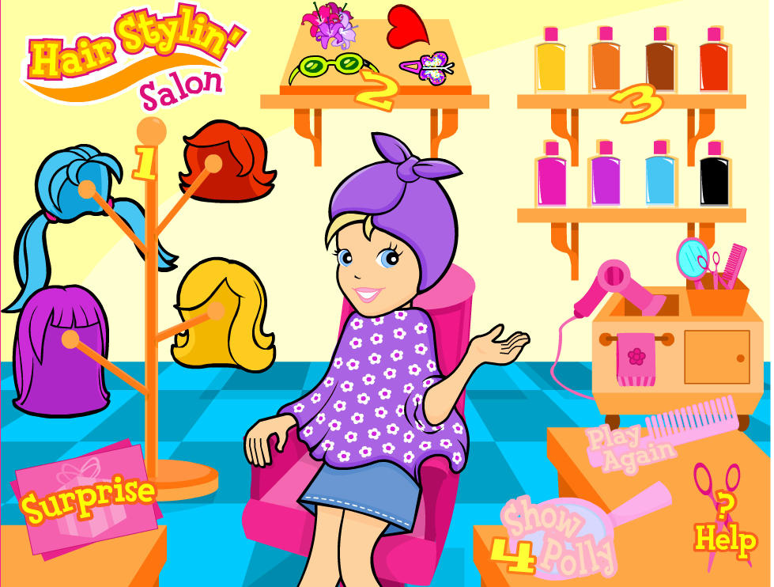
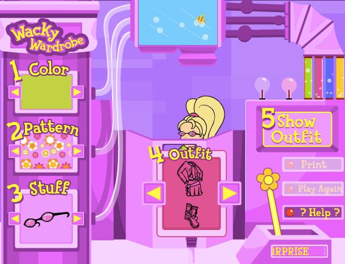

The story behind this website is my childhood journey with barbie.com. Before the internet I used to always play with Barbie Dolls. That is why I want the evolution section to show how they were when I played with them and how they are now. My very first internet experience was on barbie.com. I want to show the games I used to play. On barbie.com I was able to play dress up, make over, etc, which were games that I used to play with my actual dolls. I also used to play with Polly Pockets and My Scene dolls which were also integrated into barbie.com. My goal for the project is to show my childhood; the doll part and the barbie.com part.


Barbie has changed so much. When I was younger, all you could find were the skinny blond dolls. Now you can find all body types, skin tones, dolls with disabilities, even dolls based off of powerful women! They have become so much more inclusive and are giving young girls a better understanding and image of women. They promote realistic body images and make every girl feel special.

For Barbie’s 60th Anniversary they introduced a new line of dolls called the Role Model Collection. It consists of a range of powerful and inspirational women who children can look up too. There are a range of careers as well from journalist, sports stars, activists, artists and designers, scientists, movie stars, and much more. There are all women who are, well, role models.

When I used to play with barbie dolls in the early 2000’s, most of the dolls were very skinny, white, and blond. They dolls were so skinny that their necks and waists were almost the same size. This gave little girls an unrealistic expectation of what they were supposed to look like. Also, it was so hard to find dolls with different skin tones which made me feel out of place. All of my friends had dolls that looked like them, but I didn’t. I felt like I was “wrong”. Now they have created dolls of different races and dolls with disabilities which makes almost all girls feel included.

MyScene Makeover was one of my favorite games to play. You got to choose one of the characters and give them a complete shoulders up makeover. I once spent 1 hour playing this game. You can change the haircut, color, highlights, change eyeshadow, lipstick, blush, mascara, give ear piercings, add accessories, you name it. Then they showed the before and after polaroids.

Dazzling Nails was also lots of fun. You were able to change the skin tone of the hands, the length, and the shape. They had 20 color options, they were all pretty girly. You could add nail art stickers and rings. One thing that bothered me was that you could not do french tips. I used to enjoy the game because I was not allowed to use nail polish except for on special occasions.

Room Makeover was also really cool You got to change the theme of the bedroom and choose the furniture and accessories. The main differences between the themes were colors and activity, for example one was more “surfer girl” while another was more “flower power”. A memory that I have which is kind of funny is that it mad me feel more adult and cool. I remember pretending to be an interior designer.

MyScene Makeover was one of my favorite games to play. You got to choose one of the characters and give them a complete shoulders up makeover. I once spent 1 hour playing this game. U changes the haircut, color, highlights, change eyeshadow, lipstick, blush, mascara, give ear piercings, add accessories, you name it. Then they showed the before and after polaroids.
Dazzling Nails was also lots of fun. You were able to change the skin tone of the hands, the length, and the shape. They had 20 color options, they were all pretty girly. You could add nail art stickers and rings. One thing that bothered me was that you could not do french tips. I used to enjoy the game because I was not allowed to use nail polish except for on special occasions.
MyScene Makeover was one of my favorite games to play. You got to choose one of the characters and give them a complete shoulders up makeover. I once spent 1 hour playing this game. You can change the haircut, color, highlights, change eyeshadow, lipstick, blush, mascara, give ear piercings, add accessories, you name it. Then they showed the before and after polaroids.
Dazzling Nails was also lots of fun. You were able to change the skin tone of the hands, the length, and the shape. They had 20 color options, they were all pretty girly. You could add nail art stickers and rings. One thing that bothered me was that you could not do french tips. I used to enjoy the game because I was not allowed to use nail polish except for on special occasions.
Room Makeover was also really cool You got to change the theme of the bedroom and choose the furniture and accessories. The main differences between the themes were colors and activity, for example one was more “surfer girl” while another was more “flower power”. A memory that I have which is kind of funny is that it mad me feel more adult and cool. I remember pretending to be an interior designer.